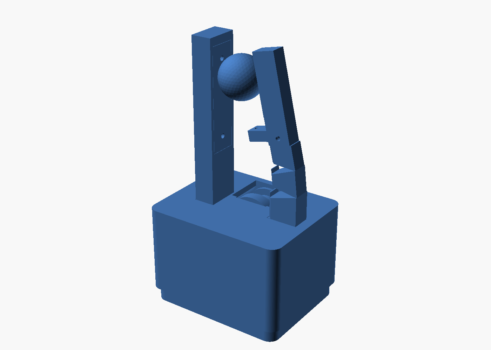
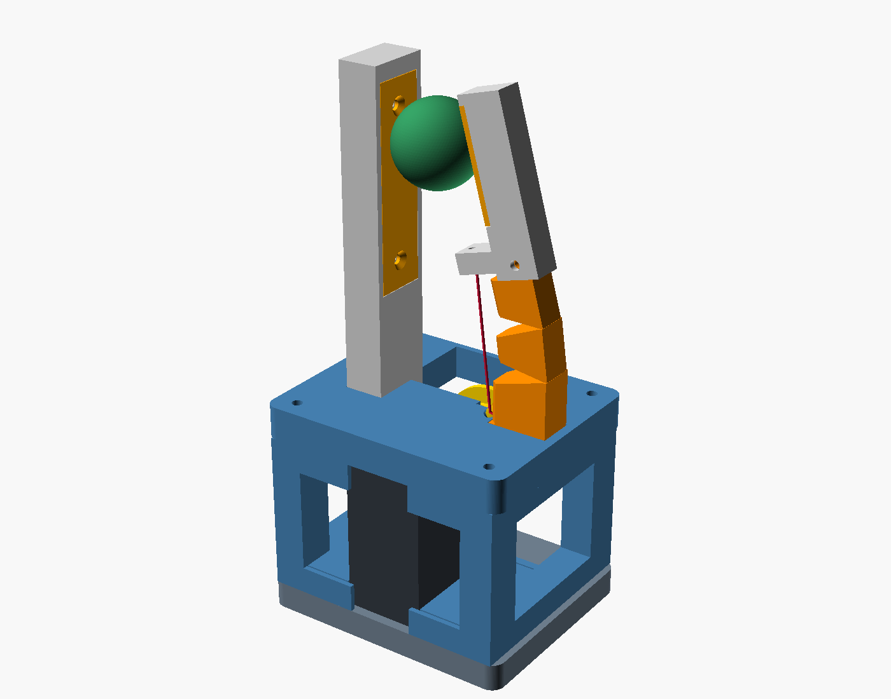

Claude and Astra built the same gripper, and they finished different jobs. The machine is the smallest one that can test a claim in our slip paper: a single root-compliant finger closes on a rigid post, one Feetech STS3215 winds one cable, and servo current is supposed to carry both the grip force and the onset of slip. That only means something if the object stays on the pads. An earlier simulation study had already thrown out a curling soft finger, because it hooked objects into the palm and grip force fell as tension rose. Both agents kept that conclusion. Claude turned it into an instrument and measured it. Astra took Claude's finished design and rebuilt the housing so it would print.
They still look like one machine. The finger is 95 mm long in both, the hinges are the same two 0.8 mm TPU webs, the post face is in the same place, and the servo horn pattern is unchanged. Three of Astra's print fixes moved the mechanism. The grasp numbers were not run again. Nothing in either folder has been printed.
The shared machine
Compliance stays at the root, and everything past it is a rigid lever. A follow-up sim on this finger showed why the lever cannot be TPU: past contact, 20 N of cable tension bent a solid or thick-web TPU lever about 20° and the tip hooked over the object anyway. So both designs are two materials. A TPU 95A flexure, two living hinges and no cable channel. A PETG lever with a cable horn, so the open-air span from the deck to the horn stands off the hinges and gives them a real moment arm. A small TPU pad, glued into a recess. A PETG post whose face plate is the swappable friction surface. The hand points down, so gravity pulls the object out and anything held is the finger's doing.
The finger profile is the same SpiRobs discretization in both folders (Wang, Freris and Wei, Device, 2025): eight units, ratio 0.90, 32° notches, only the first two joints left thin. Seat at +27 mm, post face at −15 mm, objects from 10 to 30 mm, a 25 mm ball as the picture. That inheritance is explicit in Astra's parameters. Astra did not re-derive the finger. It re-derived the thing the finger bolts to.
Claude's version: the instrument

The housing is a block with a servo bay carved out of it. One 84 × 68 × 50 mm body. The solid is 216 cm³, three quarters of that bounding box, plus an 8 mm wrist plate. Body and plate together are 253.6 cm³. The servo drops in from below. A 3 mm deck bridges a 26 mm bay. The cable channel runs from the drum to a point on the underside of the finger foot, 6 mm below the deck, and the foot is solid there: the flexure has screw holes and no cable hole. The straight line Claude uses as the open-air span starts at that buried mouth and runs out through the flexure on its way to the horn. The post is exported standing, 101 mm tall, which is the tallest mesh in the set. Eight parts, 299 cm³ of solid all together.
Two fastener details are drawn as if they work and do not. The face plate's own description calls the screw holes countersunk. The solid is a pair of straight 2.9 mm cylinders through 1.5 mm of plate. The foot and the deck are both drilled 2.7 mm for an M2.5. The screw is 2.5 mm across the threads, so both holes are clearance, and the joint has no material for a thread to bite. The same 2.7 mm hole is drilled through the TPU tenon, and the lever screws into it from the sides with no nut.
The physics is why the block exists, and the physics is real. A MuJoCo bench builds the finger from the same parameters, drives the tendon as a position actuator, and treats servo current as an observed force. Closing to about 3 N of cable, hand down, μ = 0.6 assumed:
| Object | Where it sits | Pad tilt | Pad force | dN/dT | Pull-out |
|---|---|---|---|---|---|
| Ø10 ball | pad | 29° | 1.14 N | 0.73 | 3.6 N |
| Ø20 ball | pad | 18° | 1.28 N | 0.53 | 3.5 N |
| Ø25 ball | pad | 13° | 1.35 N | 0.48 | 3.3 N |
| Ø30 ball | pad | 7° | 1.39 N | 0.42 | 2.9 N |
No object was pulled into the web. Pad force is linear in tendon force over the range they swept: N = 0.57·T − 0.47 on a 15 mm ball (R² 0.994) and N = 0.52·T − 0.32 on a 25 mm ball (R² 0.998), monotonic from 1.2 to 6.9 N. With the servo holding position, a hanging load raises the servo force by about 0.4 N at 90% of the slip load, and the tendon length moves about 0.15 mm. The object starts moving before it drops, because the compliant root carries it. Those two signals, the hold level and the rise under load, are the paper's friction-margin estimator. They belong to this cable route and this pad position.
Alongside the sim, a mesh check caught six defects that watertight-and-single-body tests had passed: a tenon pocket that left 0.06 mm lever walls, a 0.4 mm wall between a cable passage and the pad recess, horn-screw bores breaking out of a 16 mm drum, a spool hub overlapping its well by 374 mm³, a deck that measured 1.3 mm, and a flexure whose stepped back faces hovered off the bed. All six were fixed in the solids above. The check's pass gate is the 5th percentile of wall samples, and on the fixed meshes that percentile is fine. The minimum sample is still 1.11 mm on the body, against a 1.2 mm limit the check states. A coarse support estimate puts 45 cm³ of support on the body, a fifth of the part, which is that bridged bay, and 27% of the spool, which is the flange ring over the groove. Claude's notes accept the 0.8 mm hinge webs, the 26 mm bridge, and that flange. The cable check tests the span against the post, the plate, the lever and the object. It does not test the span against the flexure, which is the solid the line passes through. A countersink that was never cut, a post printed on end, and a screw hole with no thread are all outside that gate.
Astra's version: the print

Astra kept the finger program and replaced the block with four flat pieces. A 10 mm deck, two windowed rails, and the wrist plate. The servo sits in cradle pads on the rails. There is no bay ceiling. The cable guide is a short 3.4 mm diagonal bore, open at both ends, sized for a PTFE liner, exiting on the deck beside the foot instead of inside it. The spool is two prints: a tapered core, drum-end down, and a flat flange the horn screws clamp on, so nothing bridges a groove. The lever's tenon pocket is an open saddle with one through-bolt, a nut, and a washer against the TPU. The tenon shares the flexure's flat back, so it sits on the bed. The hinge notches cut through the full preceding unit, instead of stopping on the taper and leaving a thin lip. The post exports on its back, 12 mm tall, recess up. The face plate is 2.4 mm and the countersink is actually in the solid. The foot pilots are 2.1 mm, and the deck holes they pass through are 2.9 mm with countersinks, which is a clearance hole in the clamped part and a thread-forming pilot in the foot. The frame is tied with four M3 × 65 mm through-bolts and nuts on the deck, so nothing is threaded into the end of a stack of layers.

| Claude | Astra | |
|---|---|---|
| Frame, solid volume | body + wrist plate, 253.6 cm³ | deck + two rails + plate, 126.4 cm³ |
| Every printed solid | 299 cm³, 8 parts | 172 cm³, 11 parts |
| Envelope | 84 × 68 × 58 mm | 78 × 64 × 65 mm |
| Tallest exported mesh | post, standing, 101 mm | rail, 27 mm |
| Cable | bored channel from inside the foot | open 3.4 mm guide on the deck, PTFE liner |
| Spool | one piece, flange over the groove, 7.4 cm³ | tapered core + flat flange, 8.5 cm³ |
| Lever joint | closed pocket, two side screws into a 2.7 mm TPU hole | open saddle, one through-bolt, nut, washer |
| Tenon on the print | 2.79 mm off the flat back | shares the back face; the lever moves out with it |
| Hinge notches | stop at the tapered unit | cut through the preceding unit |
| Face plate | 1.5 mm, straight holes | 2.4 mm, countersunk |
| Frame screws | M3 into the body | M3 × 65 through-bolts, nuts on the deck |
Volumes are CAD solids from the exported meshes, not slicer filament. The half-material claim is the frame: 126.4 cm³ against 253.6. The finger, pad, post and spool are 45 cm³ in both designs. The spool went up by about a cubic centimetre, because the flange is now its own disc. The 127 cm³ that disappeared is the brick. The price is three extra parts, four long bolts, and a frame 7 mm taller so the deck can be a separate plate. The tallest thing on the printer goes from 101 mm to 27 mm.
Astra's checker covers assembly, and it covers the whole closing motion. All eleven meshes have to be one watertight solid, sitting on Z = 0, with a real patch of bed contact. The four through-bolts have to clear the deck, the rail they pass, and the wrist plate. Rigid parts are intersected open, at five ball diameters from 10 to 30 mm, and at five poses between open and the smallest ball. The ball has to touch the finite pad and the finite face plate. The cable span is tested against every solid, and the approach into the drum is tested against the hub-side taper, stopping short of the millimetre where the cable is supposed to meet the spool. Wall thickness, support volume, and MuJoCo are Claude's checker. Astra's notes say the current-to-grip and slip results have not been carried over, and that no slicer run has confirmed the orientations.
Three print fixes that change the grasp
Putting the tenon on the bed moves the pad. On Claude's flexure the flat back is the print face and the tenon, centered on the top unit, stops 2.79 mm short of it, so the tenon is printed in the air. Astra shifts the tenon out to the back face. The lever is bolted to the tenon, so the lever and the pad move 2.79 mm with it, away from the post. The open gap at the pad face goes from 36.7 mm to 39.5 mm. In the pinch study, pad tilt on this one-finger layout scaled with how far the finger had to travel to cross the gap. A wider gap is the direction that made tilt worse. The finger still reaches 95 mm. It just starts further from the object.
Moving the cable exit raises the moment arm, and evens it out. Both hinges sit on one line, 8.6 mm toward the back of the finger, because the flush back puts the web at a constant X. Claude's moment-arm function draws a line from the channel mouth under the foot, 2.8 mm inboard of the finger centre and 6 mm below the deck, up to the horn. The perpendicular distance from that line to the two hinges is 16.0 mm and 19.2 mm, over a 53 mm span. That is the "16 to 19 mm" in Claude's notes, and it is the line that passes through the flexure. Astra's exit is a real point on the deck, beside the foot, and the run up to the horn is 47 mm and nearly vertical. Both hinges then see 20.4 mm and 20.3 mm. More arm, and the two hinges match. Whether that transmission survives contact is exactly what the old bench would have to be asked again.
The recut notches change the hinge the sim has been treating as a hinge. Claude's notch stops at the face of the tapered unit and leaves a thin lip at the mouth. Astra cuts the notch through the wider unit below, so the web is the only material left. The rigid-band model used for clearance, and the torsional springs in MuJoCo, both assume a hinge of a known stiffness at a known place. A different web outline is a different spring, and K of these hinges was already an assumption waiting on a bench measurement.
Those three go in opposite directions. A larger moment arm buys more pad force per newton of cable. A wider gap costs pad tilt, which is what pushes an object off the friction cone and into the web. A different notch changes the stiffness that sets how far the lever actually swings. Claude's fit lines and slip traces are measurements of the first geometry. Astra's README is right to refuse them. It does not replace them.
Where that leaves the build
The printable machine and the measured machine are no longer the same solid. A first fit print is Astra's set: 27 mm tallest part, a cable path you can reach with a liner, screws that have a part to thread into, countersinks where the notes claim them, and a clearance check across the closing range rather than one grasp. Using any of those parts to claim a friction margin means pointing the existing MuJoCo bench at the new cable exit, the shifted lever, and the recut notches, and reading dN/dT and pad tilt again. Hinge stiffness, the 2.1 mm pilots in the chosen TPU and PETG, servo ears and the connector (both models use a plain box), and whether STS3215 current can see a newton of cable on a 20 mm drum, are unmeasured on both. One newton of grip is about 0.7% of that servo's stall. If the current is too coarse, the drum wants to be larger, or the servo wants to be the smaller STS3032. That question is older than either housing.
Who did what
Each agent closed the half of the loop it was aimed at. Claude, in gripper-finger-post, took the pinch-study result and made the effector: the two-material finger, the horn, the open-air span, the grasp and slip benches, and a manufacturability pass that fixed six mesh defects. Astra, in gripper-finger-post-astra, started from that folder and took print orientation as the specification: the open frame, the split spool, the accessible guide, the bed-flat tenon, the real countersinks, and a motion check from open to a 10 mm ball. This note is a third pass over both trees. The volumes and the mesh heights are measured from the exported STLs. The moment arms and the pad gap are computed from the same formulas each finger.py uses. The grasp table is Claude's published sim, quoted because it is the result Astra's geometry can no longer claim.
The two folders sit side by side in the effector library, which is not public yet. The grasp-simulation skill the benches run on is at punkfab/effector-sim.